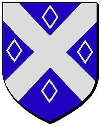

Antavla
769132397 Hawise Berthe de Quarouble

Far:
Evrard de Quarouble (1013? - 1047)
Mor:
Ida de Roncq (1018? - )
Född:
omkring 1037.
[1]
Död:
Barn med
769132396 Seigneur Hugh de Chaworth (1025 - 1097)
Barn:
Patrick l'Ancien de Chaworth (1052? - 1133?)
Personhistoria
Årtal
Ålder
Händelse
1037?
Födelse omkring 1037
[1]
1047
Fadern
1538264794 Seigneur Evrard de Quarouble
dör 1047-04
1052?
Sonen
384566198 Patrick l'Ancien de Chaworth
föds omkring 1052 Maine, Pays de la Loire, Frankrike
[2]
1097
Partnern
769132396 Seigneur Hugh de Chaworth
dör 1097 Nottinghamshire, England
[3]
1100
Barnbarnet
192283099 Sibyl de Chaworth
föds 1100 Kempsford, Gloucestershire, England
[4]
1133?
Sonen
384566198 Patrick l'Ancien de Chaworth
dör omkring 1133 Gloucestershire, England
[2]
1140
Barnbarnet
192283099 Sibyl de Chaworth
dör 1140 Bradenstoke, Wiltshire, England
[4]
Källor
[1]
Alain Foullon
[2]
Wikitree
[3]
Dave Bradley
[4]
Find a grave